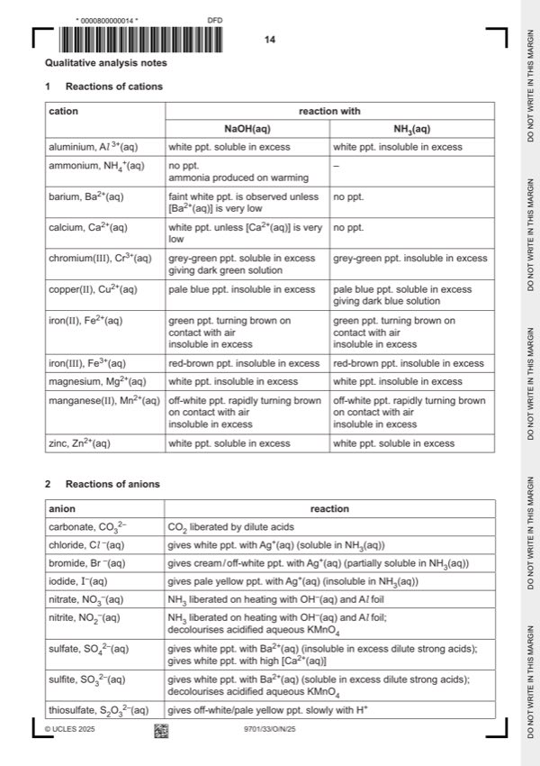

Question 1

Original paper page 14
Part 1(a) — solution
Answer: AND · AND · AND
- Volumes of water chosen so that total volume = 40.00 cm3 for additional experiments
- Examiner corrects time for VFA1 = 40.00 cm3 and VFA1 = 20.00 cm3 to the nearest s then calculates t 20 / t 40 to 2 d.p
Mark points
- Volumes of water chosen so that total volume = 40.00 cm3 for additional experiments
- Examiner corrects time for VFA1 = 40.00 cm3 and VFA1 = 20.00 cm3 to the nearest s then calculates t 20 / t 40 to 2 d.p
Part 1(b)(i) — solution
Answer: AND
l Unambiguous labelled axes with rate on the y-axis and volume of FA 1 on the x-axis OR correct units 1
AND
suitable linear scales starting at (0,0).
II Points plotted correctly. 1
III Line of best fit drawn, straight line or smooth curve, that ignores anomalous results identified by the candidate. 1
Mark points
- Correct result: AND
Part 1(b)(ii) — solution
Answer: AND · AND
- [M1] Correct line(s) drawn 2
- [M2] 1000 / rate
Mark points
- [M1] Correct line(s) drawn 2
- [M2] 1000 / rate
Part 1(c) — solution
Answer: OR
- [M1] Correct line of best fit 2
- [M2] (Rate and volume of FA 1 are) not directly proportional as the (straight) line / data / results does not / do not pass
- [M1] unavailable for line of best fit through the origin
- [M2] (Rate and volume of FA 1 are) directly proportional as the (straight) line / data / results pass through the origin / (0,0)
Mark points
- [M1] Correct line of best fit 2
- [M2] (Rate and volume of FA 1 are) not directly proportional as the (straight) line / data / results does not / do not pass
- [M1] unavailable for line of best fit through the origin
- [M2] (Rate and volume of FA 1 are) directly proportional as the (straight) line / data / results pass through the origin / (0,0)
Part 1 — solution
red-brown / brown ppt white ppt *
+ NaOH(aq) AND soluble in excess *
insoluble in excess *
Mark points
- Include the ideas shown in the solution above.
Part 1 — solution
(turns paler pink) (purple fades slightly)
+ H+ / KMnO4(aq)
and warm decolourises / turns colourless / decolourises / turns colourless /
turns (pale) yellow * turns (pale) yellow *
Mark points
- Include the ideas shown in the solution above.